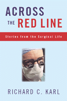

<body bgcolor="#FFFFFF" text="#000000" link="#0000FF" vlink="#CC0000" alink="#CC0000"><center><hr width="350" size="1" align="center" noshade>In the tradition of Lewis Thomas' <I>The Lives of a Cell</I>, a beautiful book on what it's like to be a surgeon<hr width="350" size="1" align="center" noshade><p><a href="https://cdcshoppingcart.uchicago.edu/Cart/ChicagoBook.aspx?ISBN=9781566399128&&PRESS=temple" target="_top">Buy this book!</a> | <a href="https://cdcshoppingcart.uchicago.edu/Cart/Cart.aspx?PRESS=temple" target="_top">View Cart</a> | <a href="https://cdcshoppingcart.uchicago.edu/Cart/Cart.aspx?PRESS=temple" target="_top">Check Out</a></p><p></p></center><!--none//--><h1>Across the Red Line</h1>
<H2>Stories from the Surgical Life</H2>
<h3>Richard C. Karl</h3>
<P>cloth 1-56639-912-2 $65.50, Nov 01, <FONT COLOR=#990033>Available</FONT>
<br>paper 1-59213-193-X $27.95, Apr 03, <FONT COLOR=#990033>Available</FONT>
<br>Electronic Book 1-43990-437-5 $27.95 <FONT COLOR=#990033>Available</FONT>
<BR> 160 pp
5.5x8.25
</P><BLOCKQUOTE><I>"Richard Karl appears to be one of those rare surgeons who cares about as well as for his patients, who speaks to them in English, rather than confusing them with complex medical terms, and who in these difficult days still loves surgery. I admire his ability to describe technical matters in simple language. His book is engagingly conversational, and, like many surgeons, he�s a great storyteller." </I>
<br>&#151<b>Joan Cassell, Ph.D.</b>, Department of Surgery, Washington Medical School, St. Louis<I></I></BLOCKQUOTE>
<p>Richard Karl, a doctor and teacher, takes the reader closer than any writer before into the corridors of the hospital, on the surgical table, and into the world of medicine. In these pages we see the tragedies and triumphs of modern medicine: the beauty of surgery done well, and the aftermath of operations that fail to deliver on the hopes of the doctor and patient. We witness the "M&M"&#151the morbidity and mortality meeting&#151where doctors scrutinize their own work and mistakes, and the often inevitable outcomes of treatment. Suffused throughout are Karl�s keen observations on the workings of the human body and its immense capacity for healing.
<p><I>"...I celebrate the rich privilege accorded the practicing surgeon. The surgical life is really about bearing witness to the human condition and about respecting the many almost whimsical variations of biology and about the intersection of the two. It is remarkable, really, the way I get to know people so intimately so quickly, and to observe the brave and often noble behavior in them, while I witness the relentless push of biology, the aging and decay, the growth and development, but most especially the healing, both physical and emotional. It is this natural drive of our bodies to repair themselves from all injuries (including the surgeon's wounds) that is the centerpiece of medicine. Without it no surgeon could cut."</I>
<p>Written with economy and subtlety, <I>Across the Red Line</I> offers a vivid picture of disease and the miracle of life. It will interest anyone who's ever been on either side of the surgical table.
<BR>&nbsp;<h2>Excerpt</h2><P>Excerpt available at <a href="http://www.temple.edu/tempress">www.temple.edu/tempress</a></p>
<BR>&nbsp;<h2>Reviews</h2>
<p><I>"[Karl is] a natural storyteller and writer... He writes short, pithy sentences and gives a description of an MRI that should speak for everyone who has survived that procedure. Dr. Karl has an acute sense of patients' rights, and members of Congress would do well to read his book before voting on the matter."</I>
<br>&#151<b>Mary McGrory</b>, <I>The Washington Post</I>
<p><I>"From the introduction, readers will be struck with how well this book captures the human side of medicine.... It's enlightening to read as Karl eloquently chronicles the sleepless nights spent worrying about patients, the outcomes that were more related to luck than his expertise and the very moving conversations held at the end of life."</I>
<br>&#151<b><i>Tribune & Times</b></i> (Tampa, Florida)
<p><i>"In </i>Across the Red Line<i> the author describes much that is satisfying in being an academic surgeon. [Karl] emphasizes the pleasures of teaching, the satisfaction of performing complex surgery, and the great joy in participating in the course of patient recovery....he emphasizes the emotional rewards of surgical work and the privileged interaction with the secrets of bodies and patients."</i>
<br>&#151<b>Dr. Sanford E. Feldman</b>, <i>The Journal of the American Medical Association</i>
<p><i>"...[A] collection of vignettes about the training, practice, and personal life of a busy surgeon....The chapter about the M&M conference is especially revealing and familiar....I recommend this easy-to-read, heartwarming, and familiar book. It will cause you to reflect, remember, and smile."</i>
<br>&#151<b>James O. Menzo�an</b>, <i>The Journal of Vascular Surgery</i>
<p><i>"14 tough and gritty essays... If you want to know what it's like to chat with someone one minute and cut into him in the next... this book won't disappoint."</i>
<br>&#151<b>Albert Howard Carter III</b>, <i>St. Petersburg Times</i>
<p><i>"Dr. Karl is a good storyteller. No, make that a very good storyteller�. This book will appeal to laypeople as well as to health care practitioners. The book contains no revelations for the surgeon&#151nor need it contain any. </i>Across the Red Line<i> provides enjoyable reading about things infrequently discussed, and that's reason enough to pick it up."</i>
<br>&#151<b><i>The Permanente Journal</i></b>
<p><i>"�spellbinding�The book is entertaining in some parts, but very intense in others, making it difficult to put down. It has value for anyone interested in medical matters or simply a good read, and will be helpful for prospective medical students to decide whether surgery interests them."</i>
<br>&#151<b><i>Kliatt</i></b>
<p><i>"...an intriguing and though provoking book."</i>
<br>&#151<b><i>AMT Events</i></b>
<BR>&nbsp;<h2>Contents</h2><P>
<p>Acknowledgments
<br>Introduction: Across the Red Line
<br>1. M & M
<br>2. How It Comes About That a Successful Operation Ends in Disaster
<br>3. Fate
<br>4. A Columnist Comes to Work
<br>5. Four Patients in Santa Fe
<br>6. Hanging
<br>7. Helping Sal-Knowing When to Quit
<br>8. On the Table
<br>9. Hotel Utah
<br>10. Midwest Bulletin Board
<br>11. Retirement Party
<br>12. Match Day
<br>13. The Norwich Classic Car Rally
<br>14. Luck
</P><BR>&nbsp;<H2>About the Author(s)</H2>
<table><tr><td valign="top"><img src="/tempress/authors/1590_au.gif" height="90" width="75"></td><td width="100%" valign="middle"><p><b>Richard C. Karl</b> is Connar Professor and Chairman of the Department of Surgery at the University of South Florida College of Medicine. A frequent contributor to the <I>St. Petersburg Times</I> and a columnist for <I>Flying Magazine</I>, he lives in Tampa.</P></td></tr></table>
<BR><H2>Subject Categories</H2>
<p><A HREF="/tempress/general.html" TARGET="_top">General Interest</a>
<BR><A HREF="/tempress/science.html" TARGET="_top">Science</a>
</p>
<p align="center"><a href="https://cdcshoppingcart.uchicago.edu/Cart/ChicagoBook.aspx?ISBN=9781566399128&&PRESS=temple" target="_top">Buy this book!</a> | <a href="https://cdcshoppingcart.uchicago.edu/Cart/Cart.aspx?PRESS=temple" target="_top">View Cart</a> | <a href="https://cdcshoppingcart.uchicago.edu/Cart/Cart.aspx?PRESS=temple" target="_top">Check Out</a></p><p><font face="Arial" size="1"><a href="copyright.html" onMouseOver="window.status='Web Copyright Policy';return true;" onMouseOut="window.status=''" title="Web Copyright Policy">&copy;</a> 2015 <a href="http://www.temple.edu" target="new" onMouseOver="window.status='Link to Temple University home page';return true;" onMouseOut="window.status=''" title="Link to Temple University home page">Temple University</a>. All Rights Reserved. http://www.temple.edu/tempress/titles/1590_reg.html</font></p>